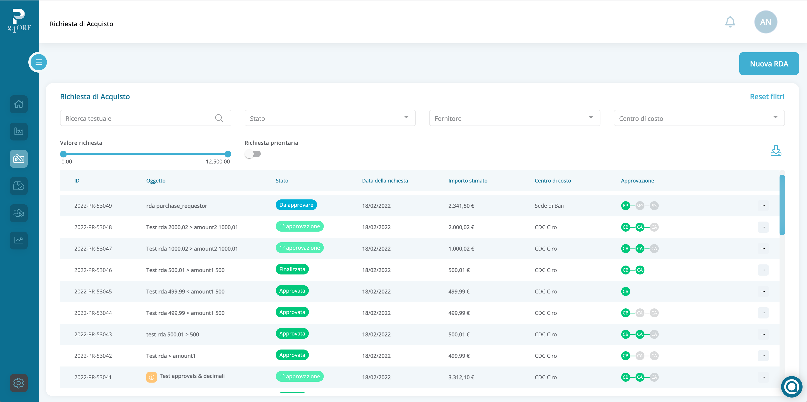

<section class="bg--primary__gray__gradient border-bottom-line px-2 md:px-0">
    <div class="container-2xl mx-auto md:pb-20 px-5">
            <div class="md:my-24 md:mt-0 mt-24 text-center">
              <h1 class="text-3xl font-semibold  md:text-3xl lg:text-4xl xl:text-5xl md:leading-tight text-primary text-center px-5 md:px-0">Processi Approvativi Personalizzati</h1>
              <button class="btn--primary rounded-md hover:font-semibold tracking-widest leading-none relative whitespace-pre ml-5 self-center mt-12" [routerLink]="['../onboarding']" [queryParams]="{type: 'Demo'}" style="min-width: min-content; height: fit-content;" type="button">
                Richiedi una demo gratuita
              </button>
            </div>
            <div class="md:flex row mt-12">
                <div class="md:w-6/12 p-3 mr-8">
                  
                </div>
                <div class="md:w-6/12 p-3">
                  <h1 class="text-xl  md:text-xl lg:text-2xl xl:text-3xl md:leading-tight my-5 text-primary font-bold">Gestisci in base alle tue esigenze il flusso approvativo di tutti gli acquisti.</h1>
                  <p>Conclusa la configurazione di una RdA o di un ordine di acquisto, questi sono sottoposti alla valutazione di uno o più utenti predisposti, a partire dal centro di costo da cui dipende, fino ad arrivare a un super approvatore. Una volta approvata, la richiesta di ordine può essere pubblicata e saranno coinvolti i fornitori.</p>
                  <br>
                  <p>
                    A seconda del ruolo in azienda, la piattaforma può essere utilizzata da utenti base, che non hanno un ruolo nel flusso approvativo; utenti approvatori, a capo dei centri di costo; super approvatori, indipendenti dai centri di costo, che hanno accesso all’approvazione globale accettare, rifiutare o rifiutare con riserva la RDA.                   </p>
                  <br>
                  <p>
                    All’utente approvatore sarà inviata una mail attraverso cui potrà accettare la RdA, rifiutarla o chiedere delle modifiche all’utente richiedente; in questo caso la RdA tornerà all’utente creatore che potrà modificarla e rinviarla al flusso approvativo.                    </p>
                  <br>
                  <p>
                    La RdA, una volta approvata da tutti gli utenti interessati, viene presa in carico da un membro dell'ufficio acquisti che si occuperà di procedere con l'acquisto richiesto tramite il modulo degli OdA. L’utente interno potrà monitorare lo stato di evasione dell’ordine e aggiornare eventualmente il materiale in entrata.                   </p>
                  <div class="md:flex mt-5">
                    <button routerLink="../orders" class="btn--secondary__blue mt-4 pr-8 text-sm rounded-md tracking-widest leading-none relative my-4"  type="button">
                        Automazione degli Ordini <span class="arrow absolute pl-1">→</span>
                    </button>
                    <button routerLink="../suppliers" class="btn--secondary__blue mt-4 md:ml-5 pr-8 text-sm rounded-md tracking-widest leading-none relative my-4"  type="button">
                        Albo Fornitori <span class="arrow absolute pl-1">→</span>
                    </button>
                    <button routerLink="../analytics" class="btn--secondary__blue mt-4 ml-5 pr-8 text-sm rounded-md tracking-widest leading-none relative my-4"  type="button">
                        Analitiche <span class="arrow absolute pl-1">→</span>
                    </button>
                </div>
                </div>
            </div>
    </div>
</section>